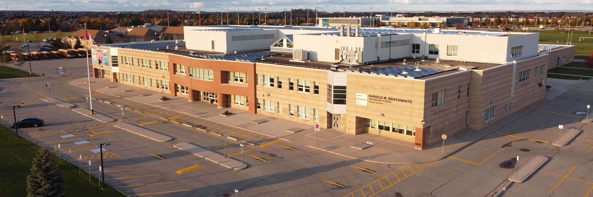
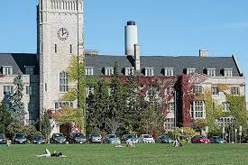

Biography
Hey there! My name is Faiz Mustansar, and I am currently a first-year student studying Computer Science at the University of Guelph. Before we delve into anything else, let's explore my background!
High School
I attended Harold M. Brathwaite Secondary School, located in Brampton, Ontario, Canada. For four years, I commuted for 40 minutes by local transit to and from school every day. I chose HB over Fletcher's Meadow Secondary School for several reasons. My main reason was my desire to start my life anew, to build new friendships, and to begin a fresh school life. Middle school wasn't the most enjoyable time for me, and knowing that 90% of my peers would be going to Fletcher's Meadow, I decided to take a chance on other schools. Fortunately, I was accepted at HB, where I achieved many academic accomplishments.
Throughout my high school years, I engaged in a rich variety of extracurricular activities that honed my leadership and teamwork skills.
Activities and Societies:
- Varsity Badminton Team
- Varsity Soccer Team
- HB MSA (Harold M Brathwaite Muslim Student Association)
- Counting on You (COY) Tutoring Program
Grades 11-12 Highlights:
During my junior and senior years, I was part of the varsity soccer team where we won ROPSAA and led various initiatives through the MSA, fostering a sense of community and belonging among students. Additionally, I mentored younger students in math and science through the COY program, which reinforced my passion for education and collaboration.
University Education
I am currently pursuing my Bachelor of Computing Honours Degree in Computer Science with a Minor in Sports & Event Management at the University of Guelph.
Relevant Coursework:
- CIS2910 - Discrete Structures II
- CIS2500 - Intermediate Programming
- STAT2400 - Statistics I
- MATH1160 - Linear Algebra I
- CIS1050 - Web Design & Development
Extracurricular Activities:
In addition to my studies, I participate in intramural sports such as table-tennis, badminton, soccer, and basketball, fulfillung my physical activity on campus
Clubs & Organizations:
- SOCIS (Society of Computing and Information Science) - Member
- Google Developer Student Club - Member
- Guelph MSA (Muslim Student Association) - Member
- Engineering Ambition - Software Developer
- Muslims in Tech - Co-Founder & Software Engineer